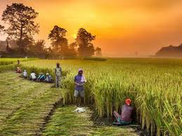

Agriculture is the art and science of cultivating the soil, growing crops and raising livestock. It includes the preparation of plant and animal products for people to use and their distribution to markets. Agriculture provides most of the world’s food and fabrics. Cotton, wool, and leather are all agricultural products. Agriculture also provides wood for construction and paper products. These products, as well as the agricultural methods used, may vary from one part of the world to another.
| Fruits | Apples | papaya | ||||
|---|---|---|---|---|---|---|
| Vegitables | green leaf | carrots | ||||
| rice items | paddy | soya |